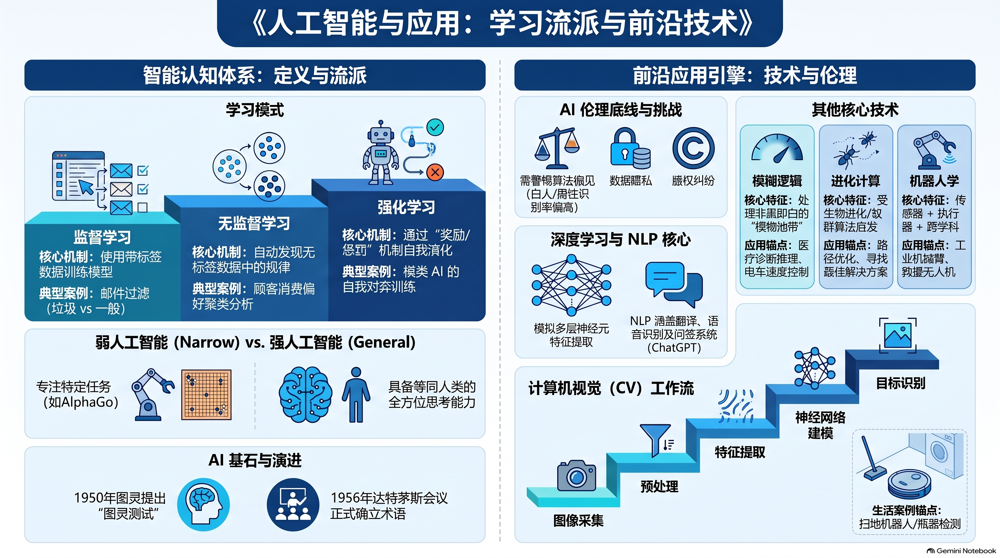
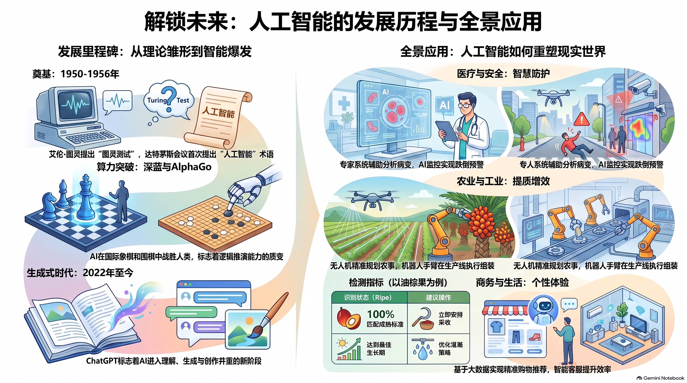

🎯 一、 单元教学与复习目标导航
1.1 课程标准核心素养
依据董教总华文独中工委会统一课程委员会《资讯科技课程标准》，本章旨在引领学生建立对人工智能的科学认知、批判性辨析与数字化伦理思维：
1.2 师生教学达成清单 (Checklist)
📖 二、课本官方中英对照核心术语速查表
严格依据董总《资讯科技第 1 册：中英名词对照表》收录，为统考试卷名词翻译与概念定义提供标准依据：
| 中文术语 | 英文术语 | 课本核心概念阐释 |
|---|---|---|
| 人工智能 / 人工智慧 | Artificial Intelligence (AI) | 让计算机系统模拟、延伸和扩展人类智能（感知、学习、推理、决策）的科学与技术。 |
| 图灵测试 | Turing Test | 由艾伦·图灵提出，通过隔离文字盲测问答判断机器是否具备与人类等同思考能力的实验。 |
| 机器学习 | Machine Learning (ML) | 使计算机无需显式编写规则，而是通过从海量数据中自主学习规律并进行预测的算法分支。 |
| 深度学习 | Deep Learning (DL) | 基于多层人工神经网络模型，能够自动提取高阶抽象特征的先进机器学习方法。 |
| 电脑视觉 / 计算机视觉 | Computer Vision (CV) | 研究如何让电脑“看懂”客观世界图像或视频，实现目标检测、人脸识别和场景理解的技术。 |
| 自然语言处理 | Natural Language Processing (NLP) | 研究人与计算机之间用自然语言进行有效通信的理论与方法（涵盖文本理解 NLU 与生成 NLG）。 |
| 专家系统 | Expert System | 内部含有大量特定领域专家知识与经验，利用知识库和推理引擎解决复杂问题的系统。 |
| 知识库 | Knowledge Base | 专家系统中用于结构化存储领域专家经验事实与推理规则（IF-THEN）的数据库。 |
| 推理引擎 | Inference Engine | 专家系统中依据知识库中的规则，按照逻辑关系推导出新结论的核心计算组件。 |
| 语音识别 | Speech Recognition | 将人类连续声波讯号转换为文字或机器可执行控制指令的技术。 |
| 聊天机器人 | Chatbot | 利用自然语言处理技术模拟人类日常对话，提供在线客服或智能问答服务的系统。 |
| 人脸检测 / 识别 | Facial Detection / Recognition | 定位图像中人脸位置（检测）并比对确认特定个人身份（识别）的生物特征技术。 |
| 推荐系统 | Recommendation System | 根据用户历史行为和兴趣画像，预测并主动推送感兴趣商品或资讯的算法系统。 |
| 人形机器人 | Humanoid Robot | 外形仿造人类形态，能够执行复杂动作并与物理环境交互的智能机器人。 |
| 执行器 / 致动器 | Actuator | 机器人的运动控制部件，负责将控制指令转化为机械物理动作（如电机、机械臂关节）。 |
| 传感器 / 感应器 | Sensor | 负责采集现实世界物理量（温度、光线、声音、距离）并转换为电讯号的感知装置。 |
| 算法偏见 | Algorithmic Bias | 由于训练数据本身含有性别、种族或地域偏见，导致 AI 模型学会并放大不公决策的现象。 |
| 深度伪造 | Deepfake | 利用生成式 AI 技术伪造人物声音与面孔，极易引发电信网络诈骗与名誉侵权的技术手段。 |
🧠 三、3.1 人工智能的发展与技术

（一）人工智能的概念与图灵测试判定

1. 什么是人工智能 (AI)：
人工智能并不是指某种特定的软件或单一技术，而是一门涉及多种大相径庭技术的新兴科学领域。其主要研究方向是如何让计算机系统模拟人类的思考模式与认知功能（学习、推理、判断、感知与语言交流）。
2. 图灵测试 (Turing Test) 实验机制：
📌 提出者：1950 年由“计算机科学之父”艾伦·图灵 (Alan Turing) 在论文《计算机械与智能》中提出。
🔬 双盲实验设置：人类测试员与被测试者（一台电脑和一位真实人类）分别隔在不同房间，仅通过文字键盘终端自由提问对话。
⚖️ 判定准绳：如果人类裁判在规定时间内无法分辨出跟自己对话的到底是一个人还是一台机器，则认为这台机器通过了图灵测试，展现出等同于人类水平的智能！
（二）AI 核心技术支柱全景剖析

不同于传统程序员写死规则，机器学习让电脑直接从海量数据中自主挖掘统计规律，训练出数学模型用于预测未知数据。包含监督学习、非监督学习与强化学习三种范式。
机器学习的尖端前沿，构建模拟人脑神经元的多层人工神经网络 (ANN)。无需人工设计特征，具备强大的“端到端”自主抽象特征提取能力。
让电脑拥有“视觉”，通过传感器采集客观图像，经由灰阶数字矩阵运算、边缘滤波与特征比对，实现图像分类与模式识别。
融合语言学与计算机科学，让电脑理解人类日常语言的语法、语义与语境。涵盖 NLU（自然语言理解）与 NLG（自然语言生成，如 ChatGPT）。
经典符号主义代表。包含两大核心组件：知识库 (Knowledge Base)（存储领域专家的 IF-THEN 规则）与推理引擎 (Inference Engine)（负责逻辑推演）。

（三）课本原题高频配对专栏（统考核心送分题）
🔥 【课本 3.1 应用配对题 7】官方权威技术匹配标准：
📝 输入文字时，发现/检查文法错误 ➔ 自然语言处理 (NLP)
📝 语音识别（如 Siri、Google Assistant） ➔ 自然语言处理 (NLP)
📝 刷脸解锁手机 (Face Unlock) ➔ 电脑视觉 (CV)
📝 推荐系统（如 Amazon 推荐商品） ➔ 机器学习 (ML)

🌐 四、3.2 人工智能的应用与影响
（一）人工智能相比人类专家的三大核心超越优势（统考核心必考题）

董总新版教材与官方参考答案明确规范了 AI 相比人类专家的三大本质优势：

（二）人工智能在现代社会各领域的落地矩阵
| 应用领域 | 课本核心落地场景 | 底层 AI 核心技术 |
|---|---|---|
| 🎓 现代教育 (Education) | 自适应个性化题库：根据每个学生的做题历史和学习进度，精准推荐难度匹配的练习题；学龄前儿童通过搭载 AI 的互动游戏进行启蒙启发式学习。 | 机器学习 (ML)、推荐系统、自然语言处理 |
| 🏠 居家生活 (Home Care) | 智能陪伴：宠物/人形机器人陪伴独居老人排解孤独；主动安全防护：通过红外感应监测突发摔倒或火灾险情并立即发出急救警报。 | 电脑视觉 (CV)、机器人学、传感器物联网 |
| 🏥 智慧医疗 (Smart Health) | 辅助放射科医生高效筛查肺部 CT 结节与早期皮肤癌病变，极大降低医生疲劳造成的漏诊率与误判率。 | 深度学习 (DL)、电脑视觉 (CV) |
| 🏭 工业 4.0 (Manufacturing) | 工业流水线机械臂毫米级质检、实时微调工件公差、无人工厂全天候熄灯自动化作业。 | 电脑视觉、执行器致动技术、强化学习 |
| 🚗 自动驾驶 (Autonomous) | 通过车载毫米波雷达、LiDAR 激光雷达与高清摄像头感知周围交通要素，并在毫秒级完成路径避障规划。 | 深度学习、电脑视觉、多模态决策系统 |

（三）商业运作机制：免费网络服务背后的 AI 变现逻辑（课本核心论述大题）

💡 【董总课本权威深度思考题】
“为什么 Google 搜索引擎与 Gmail 免费电邮对全球数亿普通使用者完全免费开放？这些跨国科技巨头靠什么维持海量服务器的高昂营运成本？”
商业与技术运作四步闭环推演：
意图全量分析
用户兴趣画像
定向客制化展示
“羊毛出在猪身上”
- NLP 全自动意图挖掘：互联网企业借助自然语言处理系统，全天候全自动解析使用者的搜索关键词、邮件往来文本内容，挖掘其生活痛点与即时消费倾向；
- 定向精准广告收费：根据分析模型，系统将高度吻合的客制化商业广告精准展示在用户屏幕上，并向企业广告商收取丰厚的广告投放服务费；
- 实质间接买单：消费者受到定向广告吸引购买了商家的商品，其实质是在通过购买商品间接为免费的电邮与搜索引擎支付了运营服务费！
- AI 的不可或缺性：每秒全球产生海量并发请求，人工绝无可能实时处理；且人工直接阅读私人信件属于严重侵犯隐私犯罪，而借助 AI 算法自动化处理则长期游走在商业与隐私法规的灰色地带。
（四）人工智能带来的伦理红线与社会挑战

监控摄像头与传感器具有严重侵犯隐私嫌疑，尤其在以下敏感场所严禁滥用：
- 家庭住宅室内（卧室、起居私人领地）；
- 输入个人私密密码、PIN 码或金融账号的键盘区域；
- ⛔ 洗手间 / 卫生间是道德与法律的绝对禁止红线！
此外，集中在云端服务器的海量人脸、声纹等不可更改的生物特征数据，一旦遭到黑客窃取泄漏，将对受害者造成不可逆的终身安全风险！


✅ 五、课本课后“学习评量”官方全真题目与参考答案详解
本节完整收录董总 2024 年版新教材第一册第 3 章 3.1 节 与 3.2 节 课后“学习评量”全部原始题干、完整备选选项、官方标准答案及逐题深度解析与课本出处：
📚 3.1 【人工智能的发展与技术】课后学习评量（原题 + 详析）
• 核心考点：1950 年英国数学家艾伦·图灵（Alan Turing）提出“图灵测试”。测试时，人类裁判在隔开且不知情的状态下通过纯文本与对方交谈。如果机器的智能程度足以使裁判无法分辨跟自己对话的是人还是电脑，则判定该机器通过了图灵测试。
• 避坑辨析：图灵测试侧重于外在行为表现是否达到人类同等智能，并不涉及测试系统内部的具体演算法技术（C 错）、测试历史履历（B 错）或诞生年代（D 错）。
• Ⅰ 正确：模糊逻辑能很好地处理“对与错”、“快与慢”之间的模糊地带，是模拟人类专家推理的重要技术（第 91 页）；
• Ⅱ 正确：自然语言处理致力于让电脑理解和处理人类自然语言（第 86 页）；
• Ⅲ 正确：深度学习由多层人工神经元组成，是当前机器学习最重要的突破分支（第 89 页）。三项均为课本重点讲授的常见 AI 技术，故选 D。
• 扫描器直接生成的文章是图片格式（像素网格），电脑无法直接检索其中的文字。
• 光学字符识别 (OCR) 属于电脑视觉分支技术，它能够自动检测分析图片中的文字笔画特征，将其提取转换成计算机可搜索、复制、编辑的文本字符编码。
• Ⅰ 对应机器翻译（将一种自然语言翻译为另一种自然语言）；
• Ⅱ 对应语音识别（将人类连续语音信号转换为对应文本文字）；
• Ⅲ 对应人机对话与智能问答系统（如沃森 Watson、Siri、智能客服）。三者全属于自然语言处理的研究与应用任务，故选 D。
• 社交媒体运用电脑视觉中的人脸检测定位与特征抽取算法，将合影照片中的面部生物特征与已存的小明面部特征进行比对匹配，进而自动标示出对应姓名，属于典型的人脸识别。
• 传统规则编程必须人工预设所有逻辑分支。而机器学习致力于让电脑系统通过大量数据进行“自主学习”，通过提取植物样本的关键特征（叶形、脉络、花色），反复迭代调整模型参数（训练过程），从而具备对未知样本的准确辨识预测能力。
| 生活中的实际 AI 应用场景 | 对应底层核心技术（官方规范答案） |
|---|---|
| 输入文字时，发现 / 检查文法错误（如 Word 语法波浪线、Grammarly 纠错） | 自然语言处理 (Natural Language Processing, NLP) |
| 语音识别与智能语音助理（如 Siri、Google Assistant 听懂说话） | 自然语言处理 (Natural Language Processing, NLP) |
| 刷脸解锁手机 / 人脸门禁闸机 (Face Unlock) | 电脑视觉 (Computer Vision, CV) |
| 电商平台与视频个性化推荐系统（如 Amazon 猜你喜欢、YouTube 推荐视频） | 机器学习 (Machine Learning, ML) |
🌐 3.2 【人工智能的应用与影响】课后学习评量（原题 + 详析）
• 棋类游戏（西洋跳棋、国际象棋、围棋等）拥有清晰明确的胜负判定条件与有限规则空间，因此是人工智能最早探索切入的试验场，并取得了极具历史轰动性的成功（1997 年深蓝击败国际象棋世界冠军卡斯帕罗夫；2016 年 AlphaGo 击败世界围棋冠军李世石）。
• 作曲、编剧、作画涉及高度人类主观情感与艺术审美，属于近年来生成式 AI 发展的新兴成果，远晚于游戏领域。
• 自适应因材施教：根据学生的学习进度、答题准确率与能力强弱，智能推荐难度适中的梯度个性化练习题，帮助学生高效查漏补缺；
• 学龄前启蒙学习：幼儿可通过具备语音交互与趣味视觉反馈的人工智能益智游戏，在互动探索中快乐学习。
• 情感陪护：智能宠物机器人或陪伴机器人能够与独居老人聊天互动，排解精神孤独感；
• 突发事故预警：居家安全监控系统能结合电脑视觉或红外传感器，监测老人摔倒、火灾等突发危险，并即时触发警报呼叫救援。
监控摄像设备的普及具有极高的侵犯个人隐私嫌疑，尤其是在私人住家内部室内、以及需要输入电脑或手机银行密码的键盘私密区域。
厕所 / 洗手间、浴室及更衣室等极度私密的场所，是法律法规与社会公序良俗上绝对不可安装或使用任何监控设备的法定红线禁区！
被系统长期采集并集中存储在云端的人脸生物特征、体貌与日常活动轨迹数据，一旦遭遇黑客非法入侵或内部泄露，将引发不可挽回的长期人身与财产安全隐患。
电脑视觉极易受到现场光线剧烈明暗变化、逆光、阴影、雨雾等极端恶劣天气以及帽子、口罩遮挡影响导致误判或漏报；同时，人脸识别算法在不同人种与性别间可能存在准确率偏差。
• 语义挖掘与意图理解：提供电子邮件及上网搜寻服务的科技企业，使用自然语言处理（NLP）系统深度分析使用者的电子邮件正文内容、搜索关键词与浏览行为，从而深刻理解与使用者相关的兴趣领域、生活痛点及即时消费需求。
• 精准客制化广告变现：企业基于深度意图画像，向商业广告主收取高额广告费，将精准匹配的客制化定向广告直接推送到用户屏幕上。
• 消费者间接买单：广大用户在客制化广告影响下购买了商家的产品，从而间接地为原本所谓的“免费”电子邮件和上网搜寻服务支付了高昂的服务费（“当你没有为产品付费时，你本身就是被出售的产品”）。
• ① 解决天量高并发的即时响应（人类人力绝无可能胜任）：全世界每秒钟有海量用户发出天文数字般的电子邮件并进行海量网络搜索，依赖人工审查与广告匹配根本无法做到即时性，必须依靠 AI 自然语言处理系统在毫秒级时间内全自动完成意图提取与广告竞价分发。
• ② 游走在法律与隐私监管的灰色地带：若由企业雇员以人工肉眼直接读取他人的私人电邮，属于严重触犯法律的侵犯个人隐私犯罪；而借由 AI 机器算法在后台自动化扫描匹配，则让科技企业得以在伦理与法律的灰色地带中隐蔽高效运作。
🗺️ 六、配套全景高精思维导图与核心考点信息图 (Infographics)
3 张全彩高精长图，全面梳理技术脉络与考点图谱，点击任意图片可全屏放大浏览：



⚡ 七、师生考前 3 分钟速记卡与板书框架
第 3 章人工智能与应用完整题库：严格依据董总 2024 年版新教材规范编制，完整收录：卷A基础巩固（30题）、卷B综合进阶（30题），配套10道综合情境作答大题，每组10题分页演练，即判即析，含教师官方阶梯评分量规。